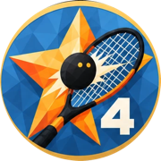
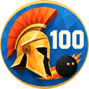

iPhone · Android in bèta · Nu nog gratis
Squash Analyzer
De app voor squashcoaches en scheidsrechters. Registreer elke rally in detail, houd de service bij zoals een scheidsrechter, verdien badges en laat AI je helpen met tactisch advies.
De app voor squashcoaches en scheidsrechters. Registreer elke rally in detail, houd de service bij zoals een scheidsrechter, verdien badges en laat AI je helpen met tactisch advies.


Deze screenshots komen uit de bètaversie die nu getest wordt. De versie in de App Store kan er nog anders uitzien. Wat valt er te testen?
De volgende versie wordt nu getest op iPhone en Android en komt daarna in de App Store en de Play Store. Nieuw:
Bekijk wat er allemaal te testen is →
Wil je hem nu al proberen? Installeer de app TestFlight van Apple en doe mee met de test. Je krijgt dan elke nieuwe testversie als eerste.
Squash Analyzer draait nu ook op Android-telefoons, met dezelfde schermen als op de iPhone: coach en scheidsrechter, live meekijken, badges, Mijn team en back-ups die je tussen iPhone en Android kunt uitwisselen.
Wil je meetesten? Meld je aan met het e-mailadres van je Google-account (het adres waarmee je in de Play Store bent ingelogd). Je krijgt dan een uitnodiging voor de test.
Squash Analyzer heeft een aparte modus voor coaches die data willen verzamelen én voor scheidsrechters die professioneel willen scoren.
Registreer elke rally in detail: tik op de score van wie scoort, kies het punttype, het vak op de baan en de slag. Wie serveert en vanuit welk vak houdt de app bij. Na de game krijg je een analyse en tactisch advies.
Snel en professioneel scoren met de officiële serviceregels. Best of 5, met let call, stroke en een scorelijn die elke rally laat zien.
Tactisch advies van OpenAI op basis van de cijfers van je game, nooit met namen
Eén keer per week automatisch een back-up in iCloud Drive, ook terug te zetten op Android
Bewaar spelers met foto, naam en coaching-aandachtspunten, of importeer je hele team
Bekijk alle opgeslagen wedstrijden en analyses terug
Begin bij game 2, 3 of 4 met de stand tot dan toe, in beide modi
Alles blijft op je telefoon. Alleen de AI-coach ontvangt statistieken, nooit namen
31 badges om te verdienen, en een spelerskaart die je met een link deelt
De stand, wedstrijden en spelers van je competitieteam van sbn.toernooi.nl
Lees per scherm hoe de app werkt, en ontdek welke badges je spelers kunnen verdienen.
Per tegel op het beginscherm uitgelegd: een wedstrijd coachen en punten invoeren met zone en slag, scheidsrechteren, wedstrijden terugkijken, spelers en teams, badges en instellingen. Met een aparte versie voor iPhone en Android.


Spelers die je kiest via "Kies speler" verdienen tijdens wedstrijden vanzelf badges: in één game, in één wedstrijd en over al hun wedstrijden samen. Er zijn er 31, van 5 punten op rij tot een rally van een minuut. Deel de spelerskaart met een link.
Squash Analyzer is een hobbyproject: gratis, zonder advertenties en zonder account. Vind je de app handig en wil je iets terugdoen? Een vrijwillige bijdrage helpt met de kosten van de server, de App Store en de Play Store. Het bedrag kies je zelf.
Helemaal vrijwillig: de app blijft voorlopig gratis.
Squash Analyzer is nu nog gratis te downloaden in de App Store voor iPhone en iPad. De Android-versie volgt binnenkort.
Downloaden in de App Store